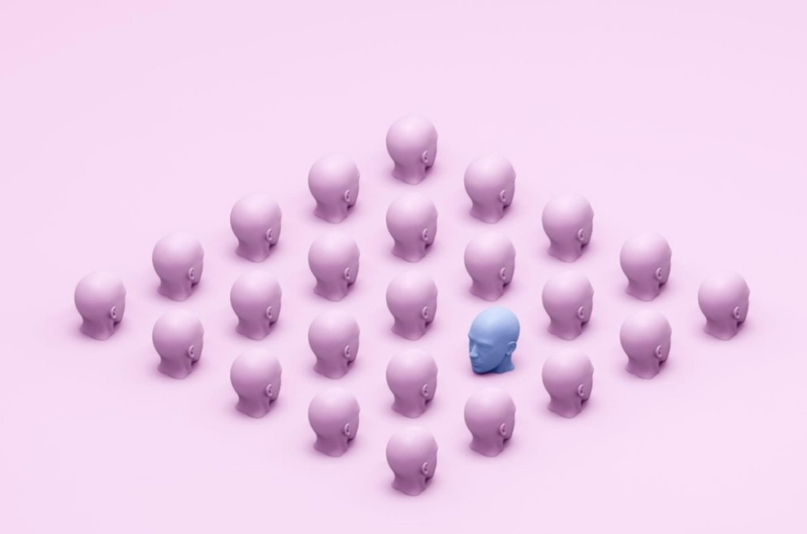

Da li smo normalni? — tekst psihologa i psihoterapeuta o mentalnom zdravlju
O tome ko određuje šta je normalno, a šta nije.

Dugo već mislim da pišem o ovome. Često se, možda i svakoga dana, zapitamo: Da li je ovo što osećam normalno? Da li je moja reakcija u redu? Da li bi trebalo drugačije da se osećam?
Nekada se pitamo za sebe, nekada za svoje dete, partnera ili nekoga ko nam je blizak. Pokušavamo da pronađemo neku granicu koja će nam reći: ovo je u redu, a ovo više nije.
Ali šta je zapravo „normalno“?
Ta reč nam deluje kao da ima jasno značenje, a kada pokušamo da je odredimo, shvatimo koliko je zapravo složena.
„Normalno“ može značiti ono što radi većina. Ono što je prosečno. Ono što je očekivano u određenom uzrastu ili kulturi. Može značiti odsustvo teškoća ili patnje. A može označavati i nešto što je karakteristično za određenu grupu ljudi.
I zato ono što je nekome potpuno uobičajeno, drugome može biti neobično. Ono što je u jednoj porodici prirodno, u drugoj možda nije. Ono što je u jednom periodu života bilo moguće, u drugom više nije.
Kada govorimo o ljudima, zato retko postoji jedan jednostavan odgovor.
Jer čovek nije prosek.
Čovek je njegova priča, iskustvo, odnosi, telo, temperament, potrebe, razvoj, okolnosti u kojima živi i način na koji pokušava da se sa svime tim izbori.
Zato mi je sve manje bliska ideja da je „normalno“ ono što većina radi.
Možda je važnije pitanje:
Da li je ovo moje? Da li mi ovo prija? Da li mi pomaže ili me udaljava od sebe i drugih? Da li mogu da živim sa tim ili zbog toga patim?
Naravno, postoje ponašanja i iskustva koja zahtevaju pažnju, podršku i stručnu pomoć. Ne znači da treba zanemariti patnju samo zato što je ona „ljudska“. Naprotiv.
Ali možda možemo da prestanemo da koristimo „normalno“ kao meru sopstvene vrednosti.
Ne moramo biti kao većina da bismo bili u redu.
Ne moramo uvek reagovati onako kako se očekuje.
Ne moramo biti bez straha, tuge, ljutnje, sumnje ili zbunjenosti da bismo bili psihički zdravi.
„Normalno“ je, za mene, pre svega — humano.
A humano znači da smo ponekad jaki, a ponekad ranjivi. Da nekada znamo šta želimo, a nekada lutamo. Da imamo svoje granice, ali ih ponekad ne postavimo na vreme. Da volimo, grešimo, menjamo se, učimo i ponovo pokušavamo.
Da saosećamo i razumemo sebe i druge.
Zato ne mislim da treba da prestanemo da se pitamo da li je nešto „normalno“.
Samo bih volela da uz to pitanje počnemo da postavljamo još neka, važnija:
- Šta mi se događa?
- Šta mi ovo govori?
- Šta mi je potrebno?
- I da li mi treba podrška?
Jer možda cilj nije da budemo „normalni“.
Možda je cilj da budemo što više svoji — i da u tome ne budemo sami.
Sanja Grubor psiholog i psihoterapeut